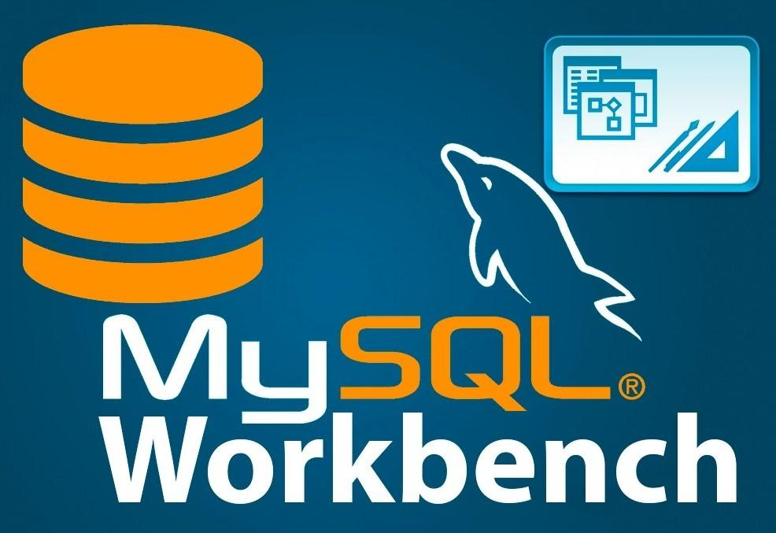

This project involves the analysis of a twitter account's(WeRateDogs) tweets that rate dogs of different breeds. A part of the Dataset was obtained through querying the twitter API using Python's Tweepy Library. Python Libraries like Pandas, Numpy, seaborn, Matplotlib were used to analyse the twitter Data.

Performed Descriptive Analysis of a company's Employee Database using SQL. The Dataset was queried to generate insights to improve business decisions in relation to the employees.
Analysis of a SuperStore Dataset using PowerBi. The Analysis involves the use of DAX functions and Charts to generate insights and make recommendations
In this Project, a Nashville Housing Data is cleaned for Analysis using Microsoft SQL(MsSQL)